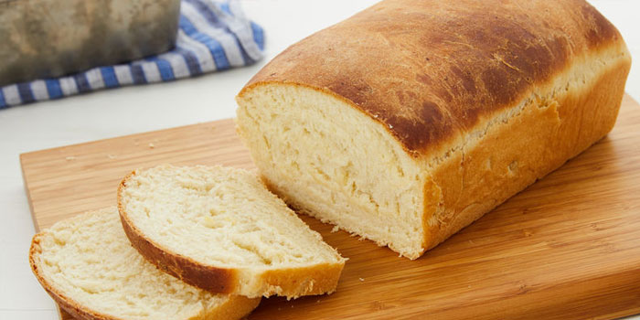

Potato Bread

Ingredients:
- 1 medium potato, peeled and diced
- 1-1/2 cups water
- 2 packages (1/4 ounce each) active dry yeast
- 1/2 cup warm water (110° to 115°)
- 1 cup warm 2% milk (110° to 115°)
- 2 tablespoons butter, softened
- 2 tablespoons sugar
- 2 teaspoons salt
- 6-1/2 to 7-1/2 cups all-purpose flour
- Additional all-purpose flour
Time:
- Prep: 20m
- Cook: 35m
- Ready In:55m
Directions:
- Place potato and 1-1/2 cups water in a small saucepan. Bring to a boil. Reduce heat; cover and simmer until very tender. Drain, reserving 1/2 cup liquid. Mash potatoes (without added milk or butter); set aside.
- In a large bowl, dissolve yeast in warm water. Add the milk, butter, sugar, salt, 4 cups flour, potatoes and reserved cooking liquid; beat until smooth. Stir in enough remaining flour to form a stiff dough.
- Turn onto a floured surface; knead until smooth and elastic, about 6-8 minutes. Place in a greased bowl, turning once to grease top. Cover and let rise in a warm place until doubled, about 1 hour.
- Punch dough down. Turn onto a lightly floured surface; divide in half. Shape into loaves. Place in two greased 9x5-in. loaf pans. Cover and let rise until doubled, about 30 minutes.
- Preheat oven to 375°. Sprinkle lightly with additional flour. Bake 35-40 minutes or until golden brown. Remove from pans to wire racks to cool.